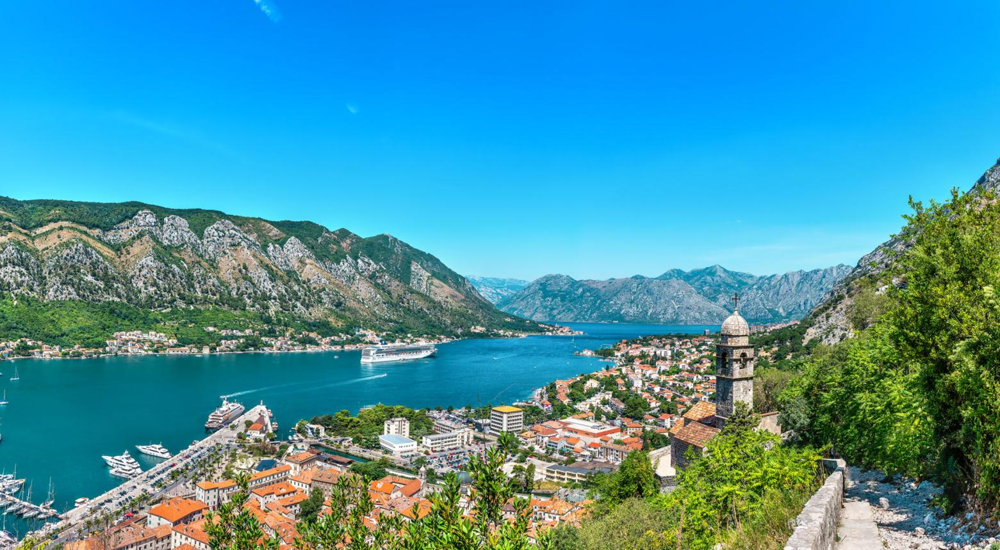

Mapa destinacija
nazad
Primorje
Sjever
Centralna Crna Gora
Crnogorsko primorje

Crnogorsko primorje poznato je po plavom Jadranskom moru, prelijepim plažama i starim primorskim gradovima.
Kotor — stari grad i zaliv
Budva — plaže i istorijske zidine
Ulcinj — Velika plaža